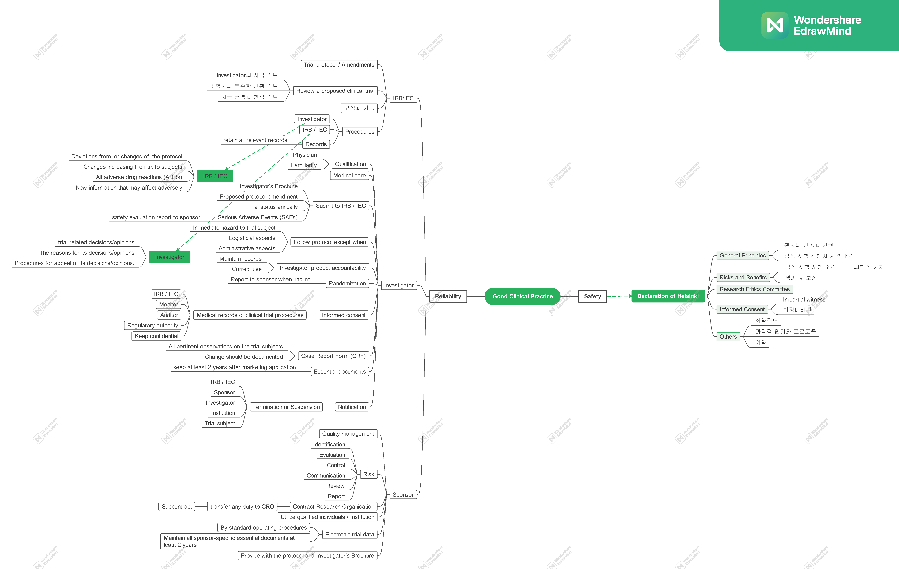
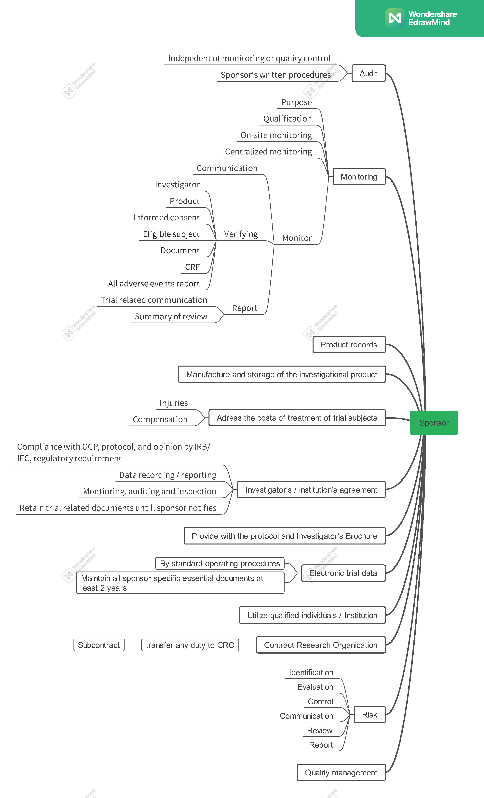

Good Clinical Practice (GCP) part 1#
GCP의 목적은 두 가지이다. 첫째는 시험자를 보호하는 것 (human subject protection)이고, 신뢰할 수 있는 임상시험 결과(reliability of trial results)를 만드는 것이다 (2.13.).
 
첫째 시험자를 보호하는 것은 헬싱키 선언에 기초한다. 헬싱키 선언에 나타난 내용 중 GCP와 관련된 내용을 위주로 작성하였다.
Declaration of Helsinki#
GENERAL PRINCIPLES#
환자의 건강을 최우선으로 생각한다.
의학 연구는 피험자를 존중하고 그들의 건강과 권리를 지키는 가운데 이루어져야 한다.
의학 연구의 목적은 새로운 지식을 얻기 위함이지만, 이 목적이 피험자의 권리와 이익보다 우선할 수 없다.
국가 혹은 국제의 법적 또는 규제 요구는 헬싱키 선언에 나타난 보호사항을 줄이거나 제거해서는 안된다.
피험자를 다루는 의학 연구는 적절한 윤리와 과학 교육과 훈련을 받고 자격을 갖춘 사람이 진행해야 한다.
Risks and Benefits#
의학적 치료와 의학적 연구를 함께 하는 경우에는 잠재적 예방효과, 진단 및 치료적 가치가 있는 경우에만 정당화된다. 또한 의사가 환자의 건강에 악영향을 주지 않을 것이라고 여길만한 적절한 근거가 있어야 한다.
의학 연구로 인해 피해를 입은 피험자에게 적절한 보상과 치료가 보장되어야 한다.
피험자를 다루는 모든 의학연구는 피험자와 그 집단에 대한 예측 가능한 위험요소와 피험자들, 다른 개인들, 다른 집단에게 미칠 이익을 비교하는 평가가 선행되어야 한다.
피험자의 이익보다 위험이 크다는 것이 발견되거나 결과에 대한 확정적인 증거가 있을 때 의사는 진행, 수정, 종료할 것인지 평가해야 한다.
Vulnerable Groups and Individuals#
시험으로 인해 추가적인 위험을 얻을 가능성이 있는 어떤 집단이나 개인을 취약 (vulnerable)이라고 한다.
취약 집단이나 개인은 특정한 보호를 받아야 한다. 이러한 집단에 대한 의학 연구는 비취약 집단에 행할 수 없고 취약 집단의 건강 필요와 우선권에 신경쓰는 경우다. 또한, 취약 단체는 이러한 결과의 지식, 실행, 중재로 인한 이득을 얻을 수 있어야 한다.
Scientific Requirements and Research Protocols#
피험자에 대한 의학 연구는 일반적으로 인정받은 과학적 원리에 기초하여야 한다. 과학적 원리는 과학 문헌과 그와 관련된 정보와 적절한 연구소와 동물 실험에 기초하여야 한다. 연구에 사용된 동물의 복지는 존중되어야 한다.
사람을 다루는 의학 연구의 연구 설계와 결과는 의학 프로토콜에 명확하게 기술되어야 하며 정당화되어야 한다.
Protocol : 임상 시험의 목적, 설계, 방법론, 통계적 고려사항과 조직을 다룬 문서. 프로토콜은 임상 시험의 배경과 근거를 담고 있어야 한다. ICH GCP 가이드라인은 프로토콜을 프로토콜이나 프로토콜 개정(protocol amendments)을 일컫는다.
프로토콜은 윤리적 고려가 포함되어야 하고 헬싱키 선언이 어떻게 다루어졌는지 기술되어야 한다. 프로토콜은 펀딩, 스폰서, 기관 제휴, 잠재적 이해상충, 피험자의 인센티브, 시험으로 인해 다친 사람의 치료와 보상에 대한 정보가 포함되어야 한다. 또한, 프로토콜은 임상시험 후의 공급에 대한 적절한 준비도 기술되어야 한다.
Research Ethics Committees#
연구 프로토콜은 임상 시험이 시작하기 전에 심사숙고, 논평, 가이드라인, 승인을 위해 윤리 위원회에 제출되어야 한다. 위원회의 기능은 투명해야 하며 연구자 및 스폰서와 독립적이어야 하고 적절하게 자격을 갖춰야 한다. 적용가능한 국제적 규범과 기준뿐만 아니라 각 국가나 국가들에서의 법과 규제를 고려해야 한다. 헬싱키 선언의 피험자에 대한 보호 조항은 삭제되거나 줄어들어서는 안된다.
윤리 위원회의 승인이나 숙고 없이 프로토콜의 개정은 이루어져서는 안된다. 임상 시험 종료 후에는 연구자들은 윤리 위원회에 임상 시험의 발견과 결론을 요약한 최종 보고서를 제출해야 한다.
Privacy and Confidentiality#
피험자의 사생활을 보호하고 개인정보 비밀을 준수한다.
Informed Consent#
임상시험 참가자들은 정보를 충분히 알고 있는 상태에서 동의(informed consent)할 수 있어야 한다.
충분히 알고 있는 상태에서 동의는 다음을 의미한다. 각 피험자들은 임상 시험의 목표, 방법론, 펀딩의 출처, 이해충돌의 여지, 연구자의 기관 소속, 임상 시험의 예상되는 이익과 위험과 불편, 임상 시험 후의 공급과 그와 관련된 측면들을 적절하게 알아야 한다(informed).
각 피험자들은 거부 없이 어느 시점에서나 임상 시험 참가 동의를 철회할 수 있다는 것을 알아야 한다(informed).
피험자의 동의는 특히 수기로 이루어져야 하며 이것이 불가능하다면 글로 쓰여지지 않은 동의가 서류화되고 증언되어야 한다(See impartial witness)
피험자나 피험자의 법정대리인이 읽을 수 없는 경우에, 충분히 알고 있는 상태에서의 동의 양식을 읽어주고 적혀진 정보를 피험자에게 제공하며 임상시험과 독립적인 사람을 impartial witness라 한다.
충분히 알고 있는 상태에서 동의할 수 없는 잠재적인 피험자의 경우, 의사는 법정대리인으로부터 충분히 알고 있는 상태에서의 동의를 받아야 한다.
의식이 없는 환자처럼 육체적으로나 정신적으로나 동의를 할 수 없는 경우, 육체적 혹은 정신적 조건이 연구 단체에 필요한 특성인 경우에 시행될 수 있다. 이러한 상황에는 의사는 법정대리인으로부터 충분히 알고 있는 상태에서 동의를 구해야 한다. 그러한 법정대리인이 존재하지 않을 경우, 피험자가 충분히 알고 있는 상태에서 동의를 할 수 없는 이유를 프로토콜에 작성해야 하며 연구 윤리 위원회의 승인을 받아야 한다.
Use of Placebo#
새로운 중재의 효과, 이익, 위험은 가장 좋은 중재 방법과 비교되어야 한다. 그러나 다음과 같은 예외 사항이 있다. 검증된 중재가 존재하지 않을 때 위약을 사용하거나 중재를 하지 않는 것이 허용된다. 또는 과학적이고 합당한 방법론적 이유로 가장 좋은 중재 방법보다 새로운 중재의 사용이 덜 효과적일 때 위약을 사용하거나 중재를 하지 않는 것이 필요하다. 이를 통해 새로운 중재의 효과와 안전을 검증한다. 이러한 방법론은 가장 좋은 중재 방법을 받지 않았을 때, 피험자에게 추가적인 심각한 위험이나 돌이킬 수 없는 위해가 있는 경우에는 불가능하다.
Other Safety Guidance#
시험 제품은 GMP (good manufacturing practice)에 따라 제작되고 다루어지고 저장되어야 한다.
피험자를 식별할 수 있는 정보는 보호되어야 한다.
The Structure of Clinical Trial#
IRB (Institutional Review Board)#
An independent body constituted of medical, scientific, and non-scientific members, whose responsibility is to ensure the protection of the rights, safety and well-being of human subjects involved in a trial by, among other things, reviewing, approving, and providing continuing review of trial protocol and amendments and of the methods and material to be used in obtaining and documenting informed consent of the trial subjects.
IEC (Independent Ethics Committee)#
An independent body (a review board or a committee, institutional, regional, national, or supranational), constituted of medical professionals and non-medical members, whose responsibility it is to ensure the protection of the rights, safety and well-being of human subjects involved in a trial and to provide public assurance of that protection, by, among other things, reviewing and approving / providing favourable opinion on, the trial protocol, the suitability of the investigator(s), facilities, and the methods and material to be used in obtaining and documenting informed consent of the trial subjects.
IRB / IEC#
Trial protocol(s) / amendment(s)
Review a proposed clinical trial
investigator의 자격 검토
non-therapeutic trial is to be carried out with the consent of the subject’s legally acceptable representative
Where the protocol indicates that prior consent of the trial subject or the subject’s legally acceptable representative is not possible
The IRB/IEC should review both the amount and method of payment to subjects to assure that neither presents problems of coercion or undue influence on the trial subjects.
Composition, Functions, and Operations
a) At least five members. b) At least one member whose primary area of interest is in a nonscientific area. c) At least one member who is independent of the institution/trial site.
The IRB/IEC should perform its functions according to written operating procedures, should maintain written records of its activities and minutes of its meetings, and should comply with GCP and with the applicable regulatory requirement(s).
Procedures
Specifying that the investigator should promptly report to the IRB/IEC:
a) Deviations from, or changes of, the protocol to eliminate immediate hazards to the trial subjects (see 3.3.7, 4.5.2, 4.5.4).
b) Changes increasing the risk to subjects and/or affecting significantly the conduct of the trial (see 4.10.2).
c) All adverse drug reactions (ADRs) that are both serious and unexpected.
d) New information that may affect adversely the safety of the subjects or the conduct of the trial.
Ensuring that the IRB/IEC promptly notify in writing the investigator/institution concerning:
a) Its trial-related decisions/opinions.
b) The reasons for its decisions/opinions.
c) Procedures for appeal of its decisions/opinions.
Records
The IRB/IEC should retain all relevant records (e.g., written procedures, membership lists, lists of occupations/affiliations of members, submitted documents, minutes of meetings, and correspondence) for a period of at least 3 years after completion of the trial and make them available upon request from the regulatory authority(ies).
The IRB/IEC may be asked by investigators, sponsors or regulatory authorities to provide its written procedures and membership lists.
Investigator#
Investigator’s Qualifications and Agreements
The investigator(s) should be qualified by education, training, and experience to assume responsibility for the proper conduct of the trial
The investigator should be thoroughly familiar with the appropriate use of the investigational product(s), as described in the protocol,
The investigator should ensure that all persons assisting with the trial are adequately informed about the protocol, the investigational product(s), and their trial-related duties and functions.
A qualified physician (or dentist, when appropriate), who is an investigator or a sub-investigator for the trial, should be responsible for all trial-related medical (or dental) decisions.
The investigator/institution should ensure that adequate medical care is provided to a subject for any adverse events
The investigator/institution should provide the IRB/IEC with a current copy of the Investigator’s Brochure.
Investigator’s Brochure : A compilation of the clinical and nonclinical data on the investigational product(s) which is relevant to the study of the investigational product(s) in human subjects
The investigator should not implement any deviation from, or changes of the protocol without agreement by the sponsor and prior review and documented approval/favourable opinion from the IRB/IEC of an amendment, except where necessary to eliminate an immediate hazard(s) to trial subjects, or when the change(s) involves only logistical or administrative aspects of the trial (e.g., change in monitor(s), change of telephone number(s)).
the implemented deviation or change, the reasons for it, and, if appropriate, the proposed protocol amendment(s) should be submitted:
a) to the IRB/IEC for review and approval/favourable opinion,
b) to the sponsor for agreement and, if required,
c) to the regulatory authority(ies).
Responsibility for investigational product(s) accountability at the trial site(s) rests with the investigator/institution.
should maintain records of the product’s delivery to the trial site, the inventory at the site, the use by each subject, and the return to the sponsor or alternative disposition of unused product(s). These records should include dates, quantities, batch/serial numbers, expiration dates (if applicable), and the unique code numbers assigned to the investigational product(s) and trial subjects. Investigators should maintain records that document adequately that the subjects were provided the doses specified by the protocol and reconcile all investigational product(s) received from the sponsor.
The investigator, or a person designated by the investigator/institution, should explain the correct use of the investigational product(s) to each subject and should check, at intervals appropriate for the trial, that each subject is following the instructions properly.
The investigator should follow the trial’s randomization procedures, if any, and should ensure that the code is broken only in accordance with the protocol. If the trial is blinded, the investigator should promptly document and explain to the sponsor any premature unblinding (e.g., accidental unblinding, unblinding due to a serious adverse event) of the investigational product(s).
Informed consent를 받는 주체
That the monitor(s), the auditor(s), the IRB/IEC, and the regulatory authority(ies) will be granted direct access to the subject’s original medical records for verification of clinical trial procedures and/or data, without violating the confidentiality of the subject, to the extent permitted by the applicable laws and regulations and that, by signing a written informed consent form, the subject or the subject’s legally acceptable representative is authorizing such access.
That records identifying the subject will be kept confidential and, to the extent permitted by the applicable laws and/or regulations, will not be made publicly available. If the results of the trial are published, the subject’s identity will remain confidential.
Case Report Form (CRF) : A printed, optical, or electronic document designed to record all of the protocol required information to be reported to the sponsor on each trial subject.
The investigator/institution should maintain adequate and accurate source documents and trial records that include all pertinent observations on each of the site’s trial subjects. Source data should be attributable, legible, contemporaneous, original, accurate, and complete. Changes to source data should be traceable, should not obscure the original entry, and should be explained if necessary
Any change or correction to a CRF should be dated, initialed, and explained (if necessary) and should not obscure the original entry (i.e. an audit trail should be maintained); this applies to both written and electronic changes or corrections (see 5.18.4 (n)). Sponsors should provide guidance to investigators and/or the investigators’ designated representatives on making such corrections. Sponsors should have written procedures to assure that changes or corrections in CRFs made by sponsor’s designated representatives are documented, are necessary, and are endorsed by the investigator. The investigator should retain records of the changes and corrections.
Essential documents should be retained until at least 2 years after the last approval of a marketing application in an ICH region and until there are no pending or contemplated marketing applications in an ICH region or at least 2 years have elapsed since the formal discontinuation of clinical development of the investigational product.
The investigator should submit written summaries of the trial status to the IRB/IEC annually, or more frequently, if requested by the IRB/IEC.
All serious adverse events (SAEs) should be reported immediately to the sponsor except for those SAEs that the protocol or other document (e.g., Investigator’s Brochure) identifies as not needing immediate reporting.
should identify subjects by unique code numbers assigned to the trial subjects
Adverse events and/or laboratory abnormalities identified in the protocol as critical to safety evaluations should be reported to the sponsor according to the reporting requirements and within the time periods specified by the sponsor in the protocol.
If the trial is prematurely terminated or suspended for any reason, the investigator/institution should promptly inform the trial subjects, should assure appropriate therapy and follow-up for the subjects, and, where required by the applicable regulatory requirement(s), should inform the regulatory authority(ies). In addition:
Investigator, Sponsor, IRB / IEC terminates or suspends a trial : Investigator notifies Institution
Investigator / Institution should notify Sponsor, IRB / IEC